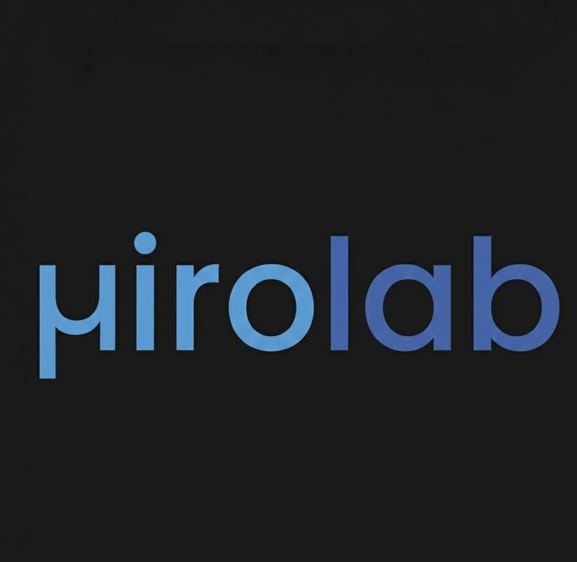

'">
MIRO Lab Research
Research Intern
Summer 2025
Research Methodology
My research focused on developing a high-fidelity multimodal sensing system to capture muscle activity and motion states. The work was structured around four technical pillars:
- Sensing Architecture (Systems): Engineered a multimodal system on a Teensy 4.0 to capture synchronized EMG and IMU data. Developed Python pipelines to handle high-throughput acquisition at 1 kHz without data loss.
- Estimation & Fusion (Algorithms): Integrated an Extended Kalman Filter (EKF) in MATLAB to fuse noisy accelerometer/gyroscope data with vision-based ground truth (ArUco markers), achieving drift-free motion estimation.
- Calibration (Data Engineering): Designed signal conditioning procedures including MMG filtering and hard/soft iron IMU alignment. Verified timing synchronization to ensure high-fidelity measurements.
- Validation (Rigor): Validated system performance through human subject testing. Analyzed fused kinematic data and presented results at the IEEE Body Sensor Networks Conference.
Sensor Fusion Data Pipeline
>> Signal Fidelity Metrics
[SYNC] Sampling Rate
1000 Hz
[TIME] Jitter Tolerance
< 1 ms
[EST] Drift Error
< 2.0 deg
[TRUTH] ArUco Conf.
98%
State Estimation Flow
EMG/MMG
BIOPHYSICS
BIOPHYSICS
IMU 9-DOF
INERTIAL
INERTIAL
CAMERA
VISUAL
VISUAL
TEENSY 4.0 // DATA ACQUISITION
EXTENDED KALMAN FILTER
SENSOR FUSION & STATE ESTIMATION
Documentation Preview
Download PDF
Visit Lab Website
Tech Stack
MATLAB
Python
Kalman Filter
Teensy 4.0
Key Outcome
Engineered a drift-free motion estimation system by fusing inertial and visual data, contributing publishable results to the IEEE Body Sensor Networks Conference.